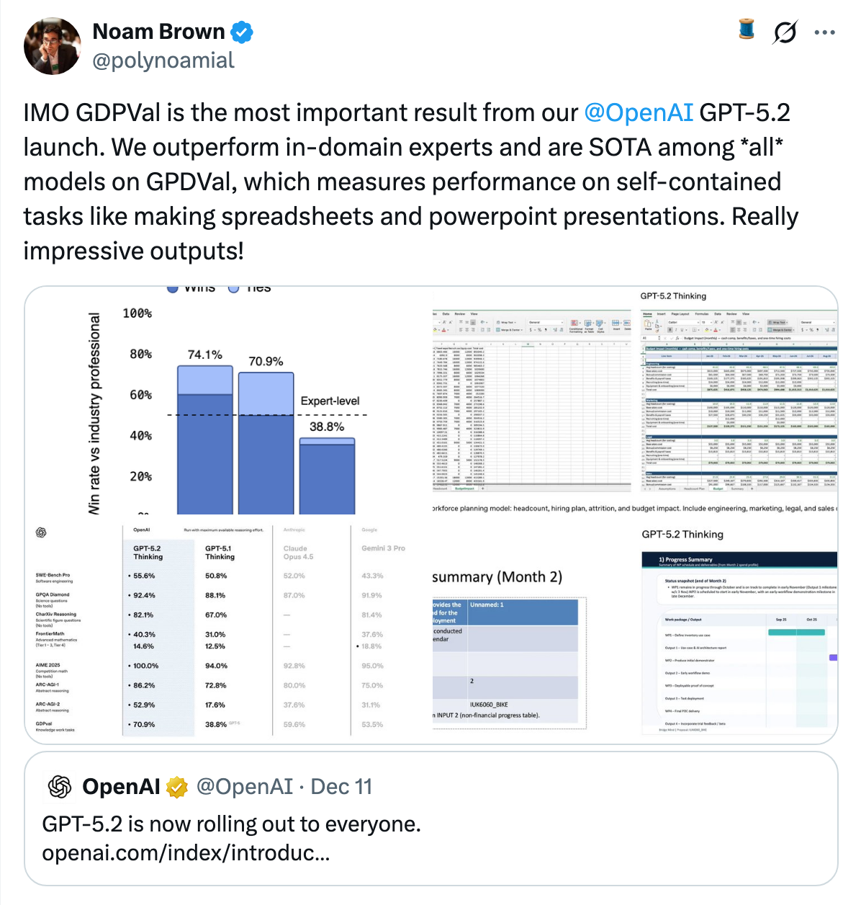
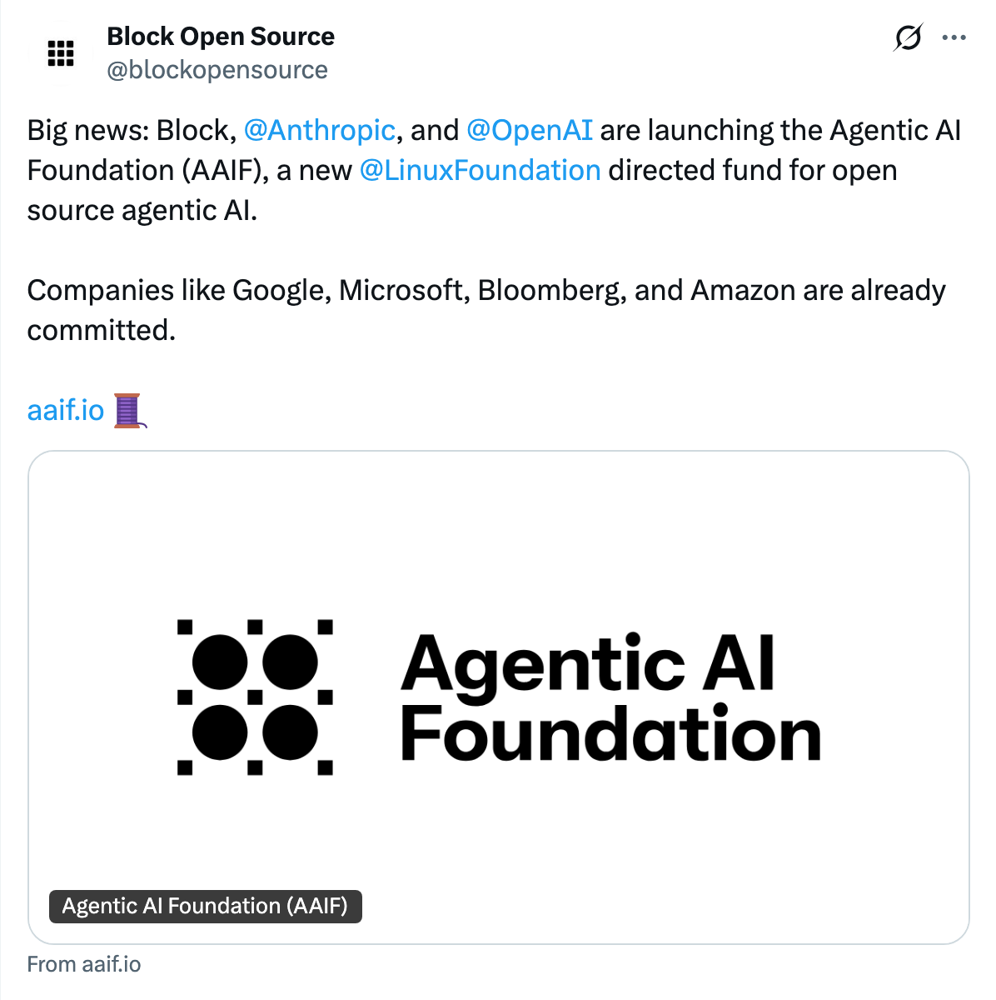
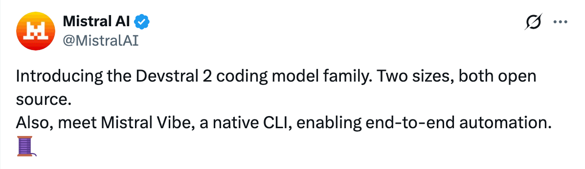
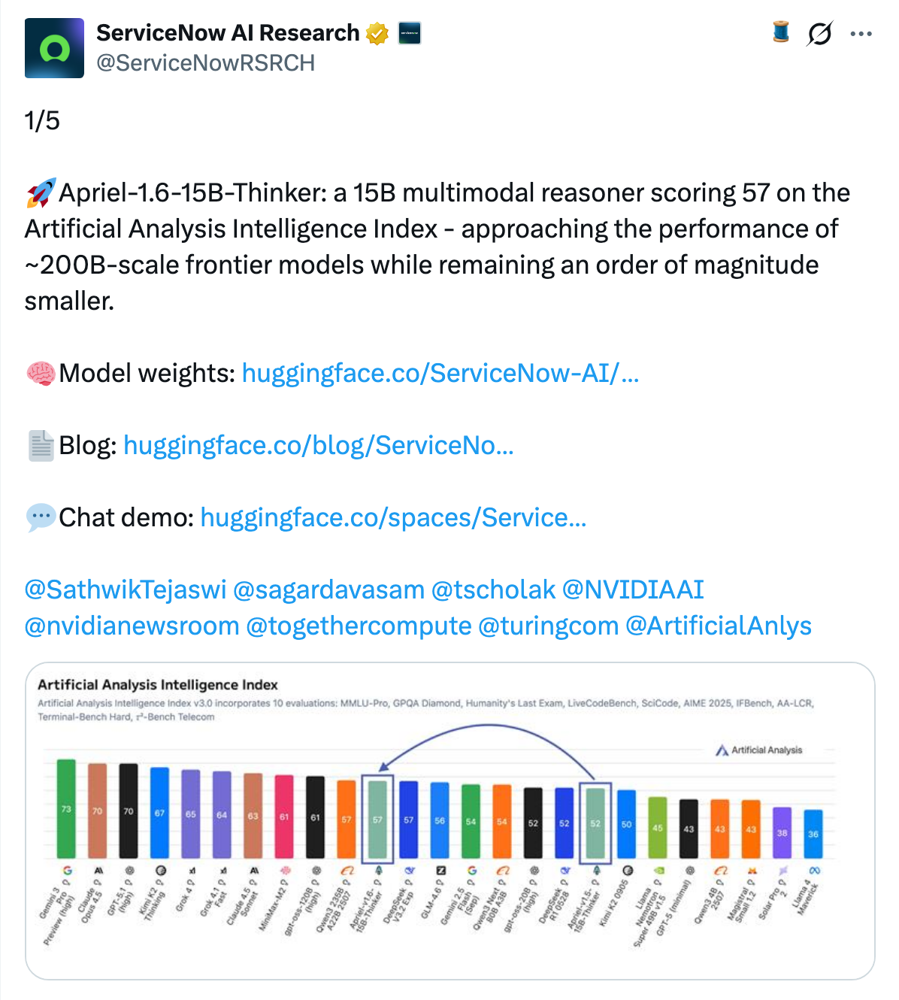
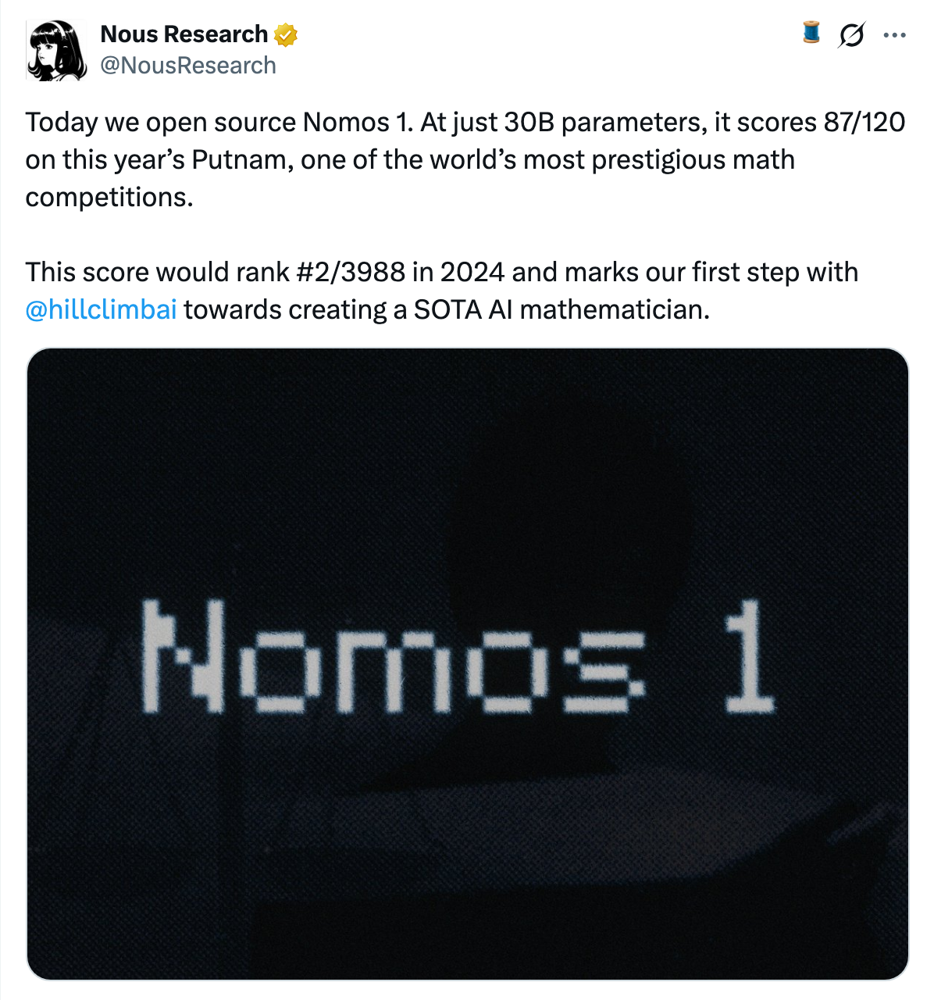
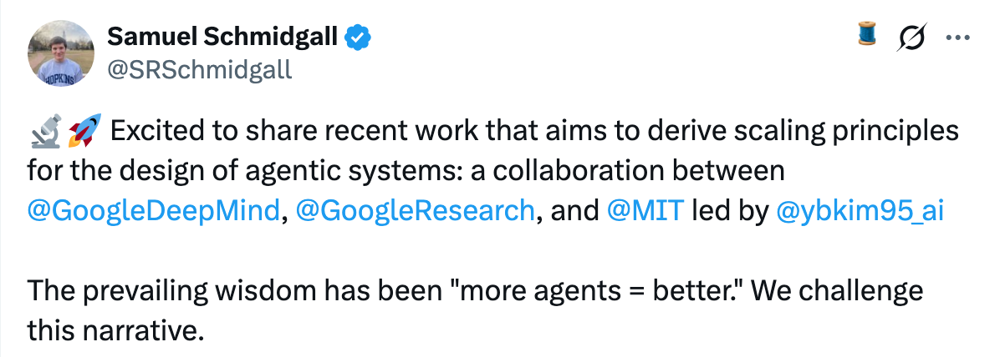
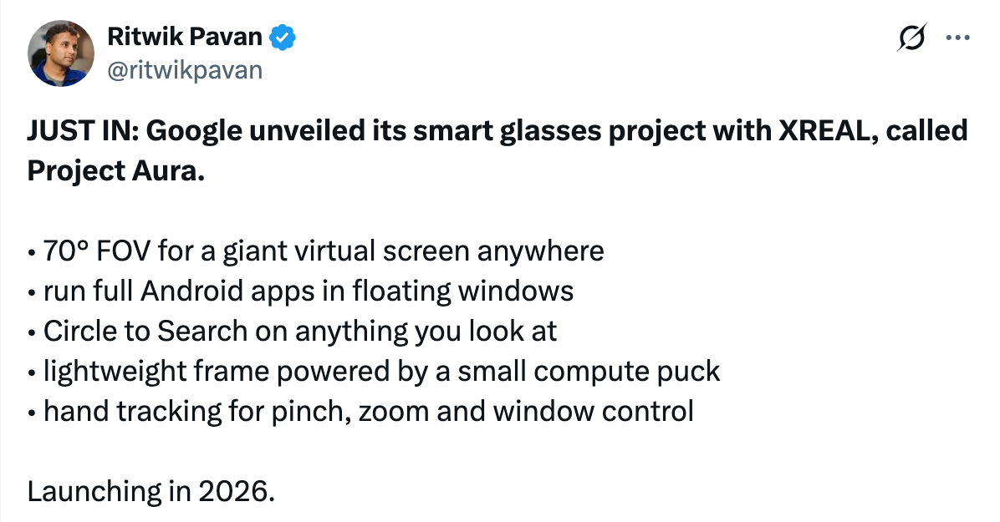
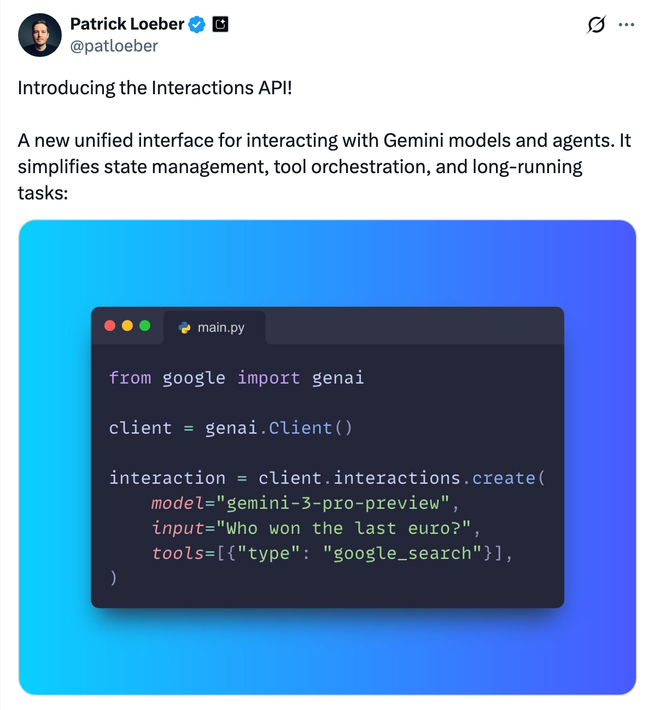
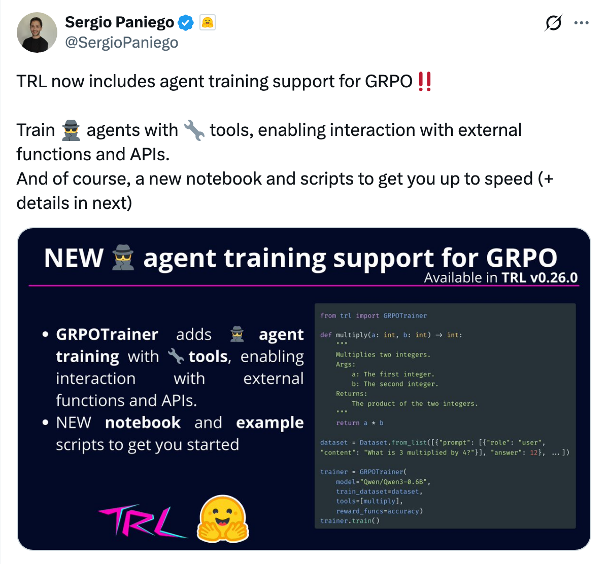
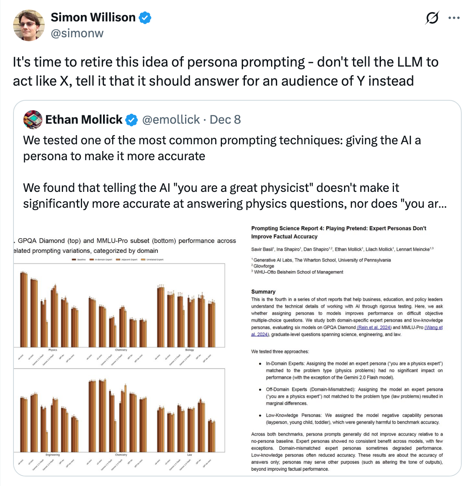
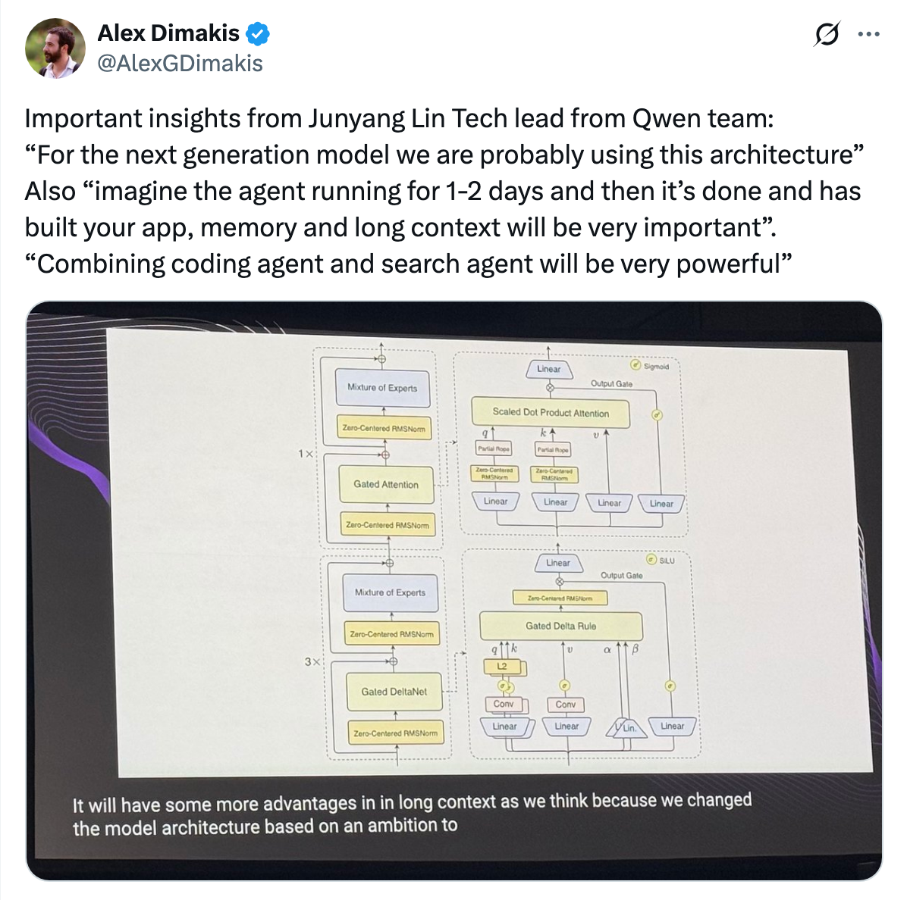
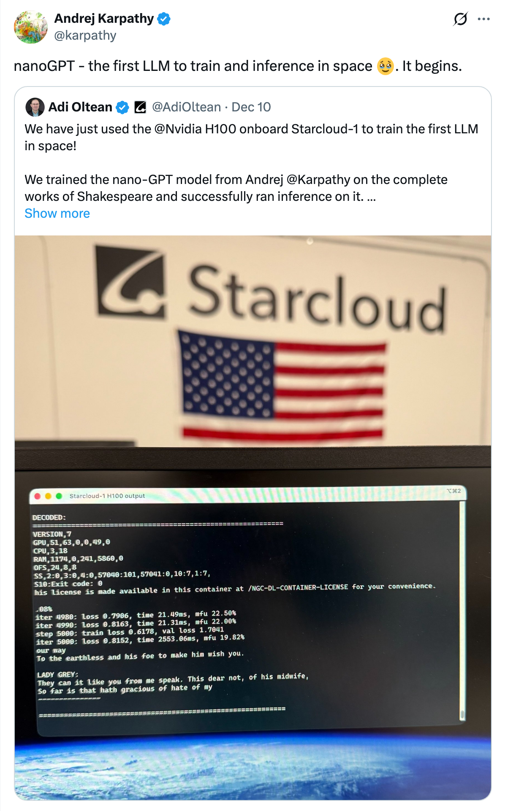
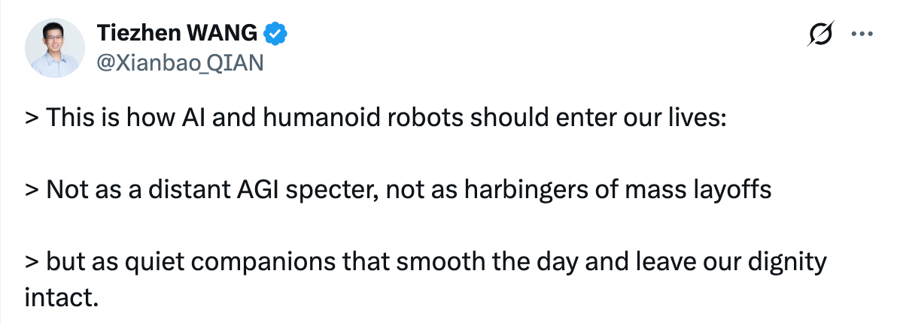
📚
view all previous issues
✨ see you next week!
![OpenAI has introduced GPT-5.2, its most advanced AI model for professional work and long-running agents, now available in ChatGPT and the API. GPT-5.2 demonstrates significant improvements across benchmarks in knowledge work, coding, factuality, long-context reasoning, vision, tool usage, and science/math, outperforming previous models such as GPT-5.1. It excels at tasks like creating spreadsheets, building presentations, writing and reviewing code, analyzing documents, and solving complex, multi-step problems. The model achieves expert-level performance on the GDPval benchmark, sets new records in software engineering evaluations, and shows enhanced reliability and reduced error rates.GPT-5.2 is available in three variants—Instant, Thinking, and Pro—each tailored for different levels of complexity and response quality. Safety features have been further strengthened, with improved responses to sensitive topics and new age prediction tools for content protection. Pricing for GPT-5.2 in the API is higher than GPT-5.1 but remains competitive due to greater token efficiency. Developed in partnership with NVIDIA and Microsoft, GPT-5.2 is positioned to accelerate productivity and scientific research, supporting a broad range of professional applications.](assets/slide_2025_50/introducing-gpt-5-2-openai.png)
![OpenAI, alongside Anthropic, Block, and with support from major tech companies like Google, Microsoft, AWS, Bloomberg, and Cloudflare, has co-founded the Agentic AI Foundation (AAIF) under the Linux Foundation. The AAIF’s mission is to establish open, interoperable standards for agentic AI systems as they transition from experimental tools to real-world applications. A key contribution is AGENTS.md, an open-source format designed to offer agents project-specific instructions and context, now adopted by over 60,000 open-source projects. The foundation also incorporates Anthropic’s Model Context Protocol and Block’s Goose, aiming to prevent ecosystem fragmentation by providing neutral, community-driven governance.By donating AGENTS.md and collaborating on standards like the Model Context Protocol, OpenAI and its partners seek to ensure that developers and enterprises can build agentic AI systems that are portable, safe, and easily integrated across platforms. The AAIF, managed under the Linux Foundation’s neutral stewardship, invites participation from developers, researchers, and organizations to further advance open agentic AI infrastructure for the public good.](assets/slide_2025_50/openai-co-founds-agentic-ai-foundation-linux-foundation-openai.png)
![Anthropic has announced the donation of the Model Context Protocol (MCP)—an open standard for connecting AI applications to external systems—to the newly established Agentic AI Foundation (AAIF), a directed fund under the Linux Foundation. Co-founded by Anthropic, Block, and OpenAI, with support from major tech companies like Google, Microsoft, AWS, Cloudflare, and Bloomberg, the AAIF aims to foster transparent, collaborative, and open development of agentic AI technologies.MCP has seen rapid adoption across the AI ecosystem, with thousands of public servers, integration in leading platforms (such as ChatGPT, Gemini, and Microsoft Copilot), and robust enterprise infrastructure support. The protocol’s governance remains unchanged, emphasizing community-driven and vendor-neutral development. By joining AAIF alongside other foundational projects, MCP's future development will benefit from the Linux Foundation’s stewardship and continued industry collaboration.](assets/slide_2025_50/donating-the-model-context-protocol-and-establishing-the-agentic-ai-foundation-anthropic.png)
![Gemini has introduced updates to its audio models and capabilities. The Google Translate app now features Gemini’s live speech-to-speech translation in beta, enabling real-time audio translation that captures nuanced human speech.Additionally, Gemini 2.5 Flash and 2.5 Pro Text-to-Speech models offer improved style adherence, context-aware pacing, and consistent multi-speaker voices. The updated Gemini 2.5 Flash Native Audio also provides enhanced handling of complex tasks, user instructions, and more natural conversations.](assets/slide_2025_50/gemini-audio-models-updates-google.png)

![Mistral AI has released Devstral 2, a new family of open-source, state-of-the-art coding models available in two sizes: Devstral 2 (123B parameters) and Devstral Small 2 (24B parameters). Both models are designed for high efficiency and strong code agent performance, achieving 72.2% and 68.0% on SWE-bench Verified, respectively. Devstral 2 is offered under a modified MIT license, while Devstral Small 2 uses Apache 2.0, and both are accessible via API, with Devstral Small 2 deployable locally on consumer hardware. The models are competitively sized and cost-efficient compared to larger proprietary alternatives.Alongside the models, Mistral introduced Mistral Vibe CLI, an open-source command-line coding agent that automates codebase exploration and modification directly from the terminal or IDE. Vibe CLI features project-aware context, smart references, multi-file orchestration, and customizable workflows, supporting both cloud and local model usage. Devstral 2 is currently free to use via API, with pricing set post-launch, and both the models and CLI are positioned for production-grade, privacy-preserving, and customizable coding automation.](assets/slide_2025_50/devstral-2-vibe-cli-mistral-ai.png)
![Apriel-1.6-15b-Thinker is a new 15-billion parameter multimodal reasoning model from ServiceNow’s Apriel SLM series, designed for efficient text and vision reasoning. It outperforms much larger models (up to 10x its size) on the Artificial Analysis Index and other benchmarks while using over 30% fewer reasoning tokens compared to its predecessor. The model was trained on NVIDIA GB200 Grace Blackwell hardware, with a focus on high-quality, diverse data and a rigorous training pipeline including multi-stage continual pretraining, supervised finetuning with curated reasoning traces, and reinforcement learning for efficiency and accuracy.Evaluation shows Apriel-1.6 achieves state-of-the-art or highly competitive results on a broad range of text and image benchmarks, including tool use, math, coding, long context, and visual reasoning tasks. Its design emphasizes cost-efficiency and deployability, making it well-suited for enterprise applications. The release highlights the ability to achieve strong performance with limited compute resources through careful data strategy and training methodology, though it notes some limitations in OCR accuracy and fine-grained visual tasks.](assets/slide_2025_50/apriel-1-6-15b-thinker-servicenow-ai.png)
![GLM-4.6V Series has launched, featuring two models: the GLM-4.6V (106B), a flagship vision-language model with a 128K context window, and GLM-4.6V-Flash (9B), a faster, lightweight version optimized for local and low-latency tasks. Notably, these models introduce native Function Calling within the GLM vision model family.Model weights, API access, and a technical blog are available online. API pricing is set at $0.6 per 1M input tokens and $0.9 per 1M output tokens for GLM-4.6V, while GLM-4.6V-Flash is free to use.](assets/slide_2025_50/glm-46v-series-launch-vision-language-model-function-calling.png)
![GLM-4.6V is a newly open-sourced multimodal large language model series, offering both a high-capacity (106B) and a lightweight (9B, "Flash") version. The models feature a 128k token context window, state-of-the-art performance in visual understanding and reasoning, and, notably, native multimodal tool calling for seamless handling of images, screenshots, and documents as both input and output. This enables end-to-end workflows for rich-text content creation, visual web search, frontend replication, and long-context understanding, making the models highly suitable for complex business and technical scenarios.Technically, GLM-4.6V leverages continual pre-training on large-scale multimodal data, world knowledge enrichment, and agentic data synthesis with extended Model Context Protocol for efficient tool invocation and interleaved outputs. Reinforcement learning aligns its tool usage and task planning capabilities, while the model is available for both cloud and local deployment with support for major inference frameworks. Full access, usage, and citation details are provided for integration into research and applications.](assets/slide_2025_50/glm-46v-open-source-multimodal-models-with-native-tool-use.png)
![GLM-4.6V is a newly released vision-language model by Zai_org, featuring a Mixture-of-Experts (MoE) architecture with 12 billion active parameters (106 billion total) and a leaner 9 billion parameter variant. The model supports extended context lengths up to 128k tokens and includes native multimodal function calling capabilities.These features make GLM-4.6V well-suited for agentic tasks such as browser control and document understanding, highlighting its potential for advanced applications requiring vision and language integration.](assets/slide_2025_50/glm-46v-vision-language-model-features.png)

![AutoGLM is an open-source project that enables AI agents to interact with mobile devices in a human-like way, going beyond simple chat interfaces to perform complex, real-world actions such as navigating apps, managing workflows, and handling device interactions. After 32 months of development, AutoGLM evolved from basic, unreliable actions to precise, autonomous operation chains, validated through milestones like the first AI-sent digital cash gift and large-scale cloud-based training with advanced RL algorithms. The system is designed to operate safely within cloud-based virtual environments, ensuring user privacy and control.The decision to open source AutoGLM stems from a commitment to democratize "Phone Use" capabilities, foster industry-wide innovation, and empower users and developers to build AI-native phones and agents. The released suite includes pre-trained models, capability frameworks, demos, adaptation layers, and documentation under permissive licenses, making it a foundation for the broader Agent Era. The project invites the community to extend, adapt, and deploy the technology, paving the way for a future where personal AI agents are accessible to all.](assets/slide_2025_50/autoglm-goes-open-source.png)
![**Olmo 3 by AI2 is a fully open-source family of large language models (LLMs) at 7B and 32B scale, designed for transparency, customization, and high performance across reasoning, coding, math, and chat tasks. Unlike most models, Olmo 3 provides the entire documented "model flow"—from raw training data and every checkpoint to code, recipes, and evaluation tools—enabling users and researchers to audit, adapt, and extend the models at any development stage. The latest update, Olmo 3.1, further improves instruction-following and reasoning with new 32B checkpoints, outperforming many comparable open-weight models on industry-standard benchmarks.Olmo 3 is trained on rigorously curated open datasets (Dolma 3, Dolci), uses a multi-stage training pipeline, and integrates with tools like OlmoTrace to trace outputs back to data sources. All codebases, datasets, evaluation frameworks, and utilities are openly available without license restrictions, supporting reproducibility and experimentation. Olmo 3 is positioned as a fully inspectable alternative to proprietary or closed-weight models, aiming to foster trust, accountability, and shared progress in AI development.](assets/slide_2025_50/olmo-3-charting-a-path-through-the-model-flow-to-lead-open-source-ai-ai2.png)
![Olmo 3.1 32B Think demonstrates that large-scale reinforcement learning (RL) can be achieved by open research labs, not just frontier companies. By extending RL training for an additional three weeks, the team observed continued improvements in challenging evaluations like AIME and coding, indicating the model's potential was not yet saturated. The experiment used 224 GPUs and approximately 125K H100 GPU hours, with all intermediate checkpoints made openly available for further study.Additional releases include a 32B Instruct model, new 7B RL Zero models for math and code, and two substantial research datasets for RL and preference modeling. The updated Olmo 3 paper has been submitted to arXiv, and the project highlights the value of stable infrastructure and collaboration within the open community.](assets/slide_2025_50/olmo-3-1-32b-rl-scaling-openai2.png)
![Jina AI has released Jina-VLM, a 2.4 billion parameter multilingual vision-language model that achieves state-of-the-art performance on open 2B-scale visual question answering (VQA) benchmarks across 29 languages. The model integrates a SigLIP2 vision encoder and a Qwen3 language backbone via an attention-pooling connector, enabling efficient processing of high-resolution images with significant reduction in computational cost. Jina-VLM excels in multilingual VQA tasks without suffering from catastrophic forgetting on text-only benchmarks, outperforming comparable models in both visual and textual domains.The architecture leverages multi-layer feature fusion, attention pooling, and SwiGLU projection to minimize visual token count while retaining information. Training is conducted in two stages—alignment with diverse multilingual caption datasets (including 15% text-only data), followed by instruction fine-tuning for VQA and reasoning tasks. Jina-VLM is accessible via OpenAI-compatible API, Hugging Face, and transformers library, supporting both image and text-only queries. Limitations include scaling challenges for very high-resolution images and weaker performance on multi-image reasoning tasks.](assets/slide_2025_50/jina-vlm-small-multilingual-vision-language-model.png)
![Cohere has introduced Rerank 4, its most advanced reranker model for enterprise AI search and retrieval. Rerank 4 utilizes a cross-encoder architecture to significantly improve the relevance and accuracy of search results by jointly processing queries and candidate documents. It supports a 32K context window for handling longer documents and complex retrieval scenarios, and is available in two versions: Fast (optimized for speed) and Pro (optimized for deep analysis and precision). The model excels in domain-specific tasks across industries like finance, healthcare, and manufacturing, as well as in multilingual environments, outperforming competitors in benchmark evaluations.A key innovation in Rerank 4 is its self-learning capability, allowing users to customize the model for their specific use cases without needing additional annotated data. This enables continuous improvement in retrieval quality, especially in specialized domains such as banking and healthcare. Rerank 4 integrates seamlessly with existing AI search solutions and can be deployed on multiple platforms, including Cohere’s own, AWS, and Microsoft Foundry. For more information, users are encouraged to consult the documentation or request a demo.](assets/slide_2025_50/introducing-rerank-4-cohere.png)
![Qwen3-Omni-Flash (2025-12-01 version) API Service has been released, offering smarter and more human-like interactions. Key improvements include better instruction following, enhanced stability in casual conversations, and precise control over personas, styles, and response lengths.The update also introduces robust multilingual capabilities, supporting 119 text languages, 19 for speech understanding, and 10 for speech generation. Human-like speech is now possible with adaptive speed and prosody, ensuring natural-sounding responses without delays.](assets/slide_2025_50/qwen3-omni-flash-api-release-ai-multilingual-humanlike-speech-audiotext.png)
![**Qwen3-Omni-Flash-2025-12-01** is an advanced, multimodal AI model by Alibaba’s Qwen Team, capable of processing and generating text, images, audio, and video seamlessly. This release brings major upgrades including improved audio-visual interaction, full customization of system prompts, enhanced multilingual support (119 text, 19 speech recognition, 10 speech synthesis languages), and significantly more natural speech synthesis. The model now allows fine-tuning of persona, tone, and response length, while ensuring high stability and coherence in multi-turn conversations.Benchmark results show substantial improvements in text understanding, code generation, speech comprehension and synthesis, as well as visual and video reasoning tasks compared to previous versions. Future directions include adding multi-speaker ASR, video OCR, proactive audio-video learning, and better support for agent-based workflows. Researchers are encouraged to cite the model in their work.](assets/slide_2025_50/qwen3-omni-flash-2025-12-01-hear-you-see-you-follow-smarter-qwen-team-alibaba.png)
![The main content discusses the concept of self-improving AI versus co-improving AI. While the traditional goal in AI research has been to create systems that autonomously improve themselves—optimizing weights, generating their own data, and potentially redesigning their own architectures—this approach carries significant risks, particularly around safety and alignment. The authors note that although self-improving AI is advancing, there is still time before AI fully surpasses human capabilities in all domains.As a safer and more effective alternative, the authors advocate for "co-improving AI," where AI systems are designed to work collaboratively with human researchers. This partnership aims to accelerate AI progress while ensuring that developments remain beneficial and aligned with human values. By keeping humans in the research loop, co-improvement leverages complementary strengths of both AI and humans, allowing for safer, more steerable progress toward advanced AI.](assets/slide_2025_50/self-improving-ai-fair-at-meta.png)
![Meta has published a paper challenging the common narrative that AI will rapidly self-improve and surpass humanity. Instead, they propose that the safest and fastest path to superintelligence is through co-improvement, where humans and AI collaborate as a joint system in AI research. This approach emphasizes shared ideation, experimentation, error analysis, alignment, and system design, integrating human reasoning and oversight throughout the research process.The paper highlights that self-improving AI excludes humans and risks failures like reward hacking and lack of transparency. In contrast, co-improvement leverages human insight to address these pitfalls, creating a loop where both humans and AI enhance each other's capabilities. Ultimately, the vision is a future where superintelligence emerges from collective human-AI collaboration, not competition, leading to a merged research organism and a more aligned, safer development of advanced AI.](assets/slide_2025_50/co-improving-ai-superintelligence-meta.png)
![The article introduces Selective Gradient Masking (SGTM), an improved technique for removing dangerous capabilities (such as CBRN knowledge) from large language models (LLMs) by localizing risky knowledge into designated, easily removable parameters during training. Unlike traditional data filtering—which struggles with imperfect labels, entangled dual-use knowledge, and collateral loss of general capabilities—SGTM directs updates from dangerous examples only to specified "forget" parameters, allowing for robust post-training ablation without sacrificing general knowledge. This process is self-reinforcing, as even unlabeled dangerous content gravitates toward these parameters, making SGTM resilient to label noise and more effective than standard filtering.Experimental results demonstrate that SGTM achieves a superior balance between removing targeted knowledge and preserving general capabilities, and is significantly more robust to adversarial fine-tuning than post-training unlearning methods. Gradient analysis shows that SGTM's localization effect strengthens with model scale. Limitations include evaluation only on relatively small models and potential vulnerability to in-context attacks at inference time. The authors suggest further research on larger architectures and integration with additional safety measures.](assets/slide_2025_50/beyond-data-filtering-knowledge-localization-for-capability-removal-in-llms-anthropic.png)

![This paper reviews the architecture and implementation of autonomous agents powered by large language models (LLMs), focusing on overcoming the limitations of traditional LLMs in real-world tasks. It explores how to develop "agentic" LLMs capable of automating complex activities and closing the performance gap with human abilities. The study details key components, including perception (environmental understanding), reasoning and planning (using techniques like Chain-of-Thought and Tree-of-Thought), memory systems (for short- and long-term knowledge retention), and execution systems (translating decisions into actions).By integrating these components, the paper demonstrates that LLM agents can more effectively mimic human cognitive processes, resulting in more autonomous, intelligent, and generalized software bots. The work highlights the growing importance of understanding human reasoning for developing advanced LLM agents, rather than focusing solely on programming expertise.](assets/slide_2025_50/fundamentals-of-building-autonomous-llm-agents-technische-universitat-munchen.png)
![Tiny-A2D introduces a method (dLLM) for converting any autoregressive language model (LM) into a diffusion-based LM, enabling parallel text generation and infilling with minimal computational resources. The approach has been used to create a collection of small, effective diffusion LMs, with code and model checkpoints publicly available.Key findings include achieving state-of-the-art performance for small diffusion LMs when finetuned on Qwen3-0.6B, and that enhancing the base autoregressive model yields better results than increasing adaptation compute. Additionally, the block diffusion method (BD3LM) outperforms traditional masked diffusion, particularly on math and coding tasks.](assets/slide_2025_50/tiny-a2d-an-open-recipe-to-turn-any-ar-lm-into-a-diffusion-lm.png)
![The paper introduces RARO (Relativistic Adversarial Reasoning Optimization), a method for training Large Language Models (LLMs) to reason effectively using only expert demonstrations, without relying on task-specific verifiers or additional human preference data. RARO formulates reasoning learning as an adversarial game between a policy (which mimics expert answers) and a relativistic critic (which distinguishes expert from policy answers), jointly optimizing both using reinforcement learning. The authors identify key stabilization techniques for robust learning, allowing RARO to elicit strong reasoning skills from demonstration data alone.Empirical results show that RARO outperforms existing verifier-free methods on tasks such as Countdown, DeepMath, and Poetry Writing, and achieves scaling trends similar to RL approaches that use verifiers. This demonstrates that RARO can effectively learn robust reasoning behaviors from demonstrations, making it possible to train LLMs for reasoning-intensive tasks even when explicit verifiers are unavailable.](assets/slide_2025_50/escaping-the-verifier-learning-to-reason-via-demonstrations-mit.png)
![RARO introduces a novel approach for teaching large language models (LLMs) to reason, moving away from traditional reliance on verifiers, which are effective for mathematical tasks but less suitable for creative or open-ended domains. Instead, RARO leverages adversarial games and demonstrations to train LLMs, eliminating the need for explicit verification or complex environments.This paradigm shift aims to enhance LLMs' reasoning abilities in areas where standard verification-based reinforcement learning falls short, offering a flexible and demonstration-driven alternative for a broader range of reasoning tasks.](assets/slide_2025_50/raro-llms-reasoning-adversarial-games.png)
![GPT-5.2 System Card Update Summary-----------------------------------OpenAI released an update to the GPT-5 System Card, introducing version GPT-5.2. The update was published on December 11, 2025, and outlines the latest changes and improvements in the GPT-5 model series. Key advancements and modifications are documented to inform users and stakeholders about the evolution of the system.The System Card serves as an official record, ensuring transparency regarding the model’s capabilities, safety updates, and performance enhancements. This update reflects OpenAI’s ongoing commitment to responsible AI development and communication with the public.](assets/slide_2025_50/update-to-gpt-5-system-card-gpt-5-2-openai.png)
![This paper investigates how Reinforcement Learning with Verifiable Rewards (RLVR) enhances Large Language Models’ (LLMs) reasoning by analyzing the role of token entropy in Chain-of-Thought (CoT) tasks. The authors find that only a small minority of tokens—those with high entropy—act as critical "forks" that determine reasoning directions, while the majority are low-entropy and simply follow established paths. RLVR primarily adjusts the entropy of these high-entropy tokens, and restricting policy gradient updates to just this minority yields comparable or improved performance versus updating all tokens, especially as model size increases.Experiments show that focusing RLVR training on the top 20% highest-entropy tokens maintains or boosts performance—surpassing full-gradient training on large Qwen3 models—while training only on the lowest-entropy 80% sharply degrades results. These findings suggest RLVR’s effectiveness comes from optimizing key decision points within reasoning sequences and that a token-entropy perspective offers a promising path to further improving LLM reasoning.](assets/slide_2025_50/beyond-the-80-20-rule-high-entropy-minority-tokens-drive-effective-reinforcement-learning-for-llm-re.png)
![The Qwen team's NeurIPS 2025 paper, "Beyond the 80/20 Rule: High-Entropy Minority Tokens Drive Effective Reinforcement Learning for LLM Reasoning," proposes a novel approach to improving reinforcement learning for large language models (LLMs). The authors suggest that, rather than distributing loss across all tokens, RL methods like GRPO should focus the loss calculation on the 20% of tokens with the highest entropy, which are more uncertain and informative.This targeted strategy aims to enhance LLM reasoning by prioritizing learning on the most challenging and impactful parts of the output. The results indicate that concentrating reinforcement learning updates on high-entropy tokens leads to more effective model training and improved reasoning abilities.](assets/slide_2025_50/beyond-the-80-20-rule-high-entropy-minority-tokens-drive-effective-reinforcement-learning-for-llm-re-1.png)
![The paper "Towards a Science of Scaling Agent Systems" presents a comprehensive empirical study on the principles that govern the performance of language model (LM)-based agent systems, which are central to modern AI applications. The authors define agent system scaling as the interplay of agent count, coordination structure, model capability, and task properties, and evaluate this across four diverse benchmarks (financial reasoning, web navigation, game planning, and workflow execution). Using five canonical agent architectures across three LLM families and 180 controlled configurations, they isolate architectural effects and derive predictive models using empirical coordination metrics such as efficiency, overhead, error amplification, and redundancy.Key findings include: (1) a tool-coordination trade-off, where tool-heavy tasks are penalized by multi-agent overhead under fixed computational budgets; (2) capability saturation, where multi-agent coordination yields diminishing or negative returns once single-agent baselines exceed a performance threshold; and (3) topology-dependent error amplification, with independent agents amplifying errors more than centralized ones. The framework predicts optimal coordination strategies for most held-out configurations and demonstrates that the benefits of agent coordination are highly task-dependent, sometimes degrading performance in sequential reasoning tasks but offering significant gains in parallelizable or dynamic contexts.](assets/slide_2025_50/towards-a-science-of-scaling-agent-systems-google-mit.png)
![Active Video Perception (AVP) is a novel framework for long video understanding (LVU) that addresses the challenge of extracting sparse, crucial information from hours of mostly irrelevant video content. Unlike traditional methods that passively generate query-agnostic captions—leading to inefficiency and poor localization—AVP adopts an active perception paradigm. It treats the video as an interactive environment, where an agent iteratively plans targeted observations, gathers time-stamped evidence, and reflects on sufficiency to answer specific queries.The AVP approach leverages multimodal large language models (MLLMs) in a plan–observe–reflect loop, focusing computational resources only on query-relevant content, which improves both efficiency and accuracy. Experiments across five LVU benchmarks demonstrate that AVP significantly outperforms previous agentic methods, achieving higher accuracy with dramatically reduced inference time and input token usage.](assets/slide_2025_50/active-video-perception-iterative-evidence-seeking-for-agentic-long-video-understanding-salesforce-a.png)
![Active Video Perception (AVP) is a novel framework for video understanding that emulates human viewing strategies. It first skims videos for context, then focuses on critical moments, treating video as an interactive environment to seek out query-relevant evidence.AVP operates with an iterative Plan–Observe–Reflect loop, actively selecting which video segments to examine and assessing if sufficient information has been gathered. This approach significantly boosts efficiency, achieving higher accuracy (+5.7%) than previous agentic methods while requiring far fewer computational resources.](assets/slide_2025_50/active-video-perception-iterative-evidence-seeking-for-agentic-long-video-understanding.png)
![Google’s new Interactions API introduces a unified interface for building stateful, multi-turn AI agent workflows, supporting both raw model access (like Gemini) and managed agents (such as Gemini Deep Research Agent). Developers can upgrade their existing Agent Development Kit (ADK) workflows to leverage this new API for improved state management, background execution, and native handling of agent "thoughts." This enables more sophisticated agentic loops and simplifies the integration of AI capabilities.Additionally, the Interactions API is mapped to the Agent2Agent (A2A) protocol, allowing it to act as a remote agent within multi-agent systems without requiring significant code changes or new SDKs. The integration is transparent, supporting streaming, configuration smuggling, and standard A2A messaging patterns, making it easier to expand and connect agentic ecosystems using Google’s latest AI tools.](assets/slide_2025_50/building-agents-with-adk-and-interactions-api-google.png)
![The article explains "context engineering" as a critical discipline for building effective AI agents, especially those using large language models (LLMs). While prompt engineering focuses on how questions are asked, context engineering is about ensuring the model receives the right information at the right time, working within the limits of the model's context window. This involves careful design of retrieval, memory, tool integration, and prompting to help the model reason accurately and avoid common pitfalls like context poisoning, distraction, confusion, and clash.The six pillars of context engineering are: Agents (decision-makers and orchestrators), Query Augmentation (refining user input), Retrieval (optimizing information sourcing and chunking), Prompting Techniques (guiding model behavior), Memory (blending short-term and long-term storage), and Tools (enabling real-world actions). The article demonstrates these principles through "Elysia," an open-source agentic RAG framework that orchestrates information flow, query refinement, and tool use to build robust, context-aware AI systems. The key takeaway is that dependable AI applications require holistic context system design, not just better prompts or larger models.](assets/slide_2025_50/context-engineering-for-ai-agents-weaviate.png)
![Google Cloud has introduced AlphaEvolve, a Gemini-powered coding agent designed to automate the discovery and optimization of advanced algorithms for complex scientific and engineering challenges. AlphaEvolve leverages Gemini models to generate, mutate, and evolve code solutions within a feedback loop, guided by user-defined evaluation metrics. Proven internally at Google, it has enhanced data center efficiency, accelerated AI training, and improved chip design.Now available in private preview on Google Cloud, AlphaEvolve enables businesses across industries—including biotech, logistics, finance, and energy—to optimize proprietary algorithms for tasks like molecular simulation, routing, risk modeling, and grid management. Interested users can access the AlphaEvolve Service API through an early access program by contacting their Google Cloud representative.](assets/slide_2025_50/alphaevolve-on-google-cloud-ai-for-agentic-discovery-and-optimization-google-cloud.png)
![Google has released a significantly enhanced Gemini Deep Research agent, now accessible to developers via the new Interactions API. This agent leverages the Gemini 3 Pro model, optimized for long-running, multi-step research and synthesis tasks with improved accuracy and reduced hallucinations. Developers can use the Gemini API key to embed advanced autonomous research capabilities into their applications, including features like unified information synthesis, detailed citations, report customization, and structured JSON outputs. The agent is already being used in finance and biotech to accelerate complex research workflows.Alongside the agent, Google has open-sourced DeepSearchQA, a new benchmark designed to evaluate research agents on multi-step, comprehensive information-seeking tasks. The benchmark, featuring 900 tasks across 17 fields, is intended to drive advancements in agent reasoning and retrieval. Future updates will add capabilities like native chart generation and broader data connectivity, with plans to integrate Gemini Deep Research into Google products such as Search, NotebookLM, and Vertex AI.](assets/slide_2025_50/gemini-deep-research-agent-google.png)
![Thinking Machines Lab has announced four major updates to Tinker: the removal of the waitlist for general availability, the launch of the Kimi K2 Thinking model with a trillion parameters for advanced reasoning and tool use, a new inference interface compatible with the OpenAI API, and support for vision input using Qwen3-VL models. Tinker users can now fine-tune these models, process images alongside text, and leverage seamless integration with OpenAI API-compatible platforms.The team demonstrates the new vision capabilities by fine-tuning Qwen3-VL-235B-A22B-Instruct on classic image classification datasets (Caltech 101, Stanford Cars, Oxford Flowers, and Oxford Pets), comparing its performance to the traditional DINOv2 vision model. Qwen3-VL shows superior accuracy in limited-data scenarios due to its combined language and vision understanding, making it well-suited for a range of vision tasks beyond simple classification.](assets/slide_2025_50/tinker-general-availability-and-vision-input-thinking-machines.png)
![During early testing of GPT-5.2, OpenAI extended the background task timeout from 1 to 3 hours, and advised disabling summaries to reduce load. Notable new features include higher reasoning levels ("xhigh" and "pro"), though response reliability at these levels—especially on challenging benchmarks like ARC-AGI-2—remains inconsistent. The model’s "pro xhigh" variant demonstrated strong performance, achieving 90% on ARC-1, though testers expect progress to slow as models approach the frontier of reasoning ability.Despite advancements, the base GPT-5.2 model only achieved 12% on ARC-1, underscoring the ongoing difficulty of general reasoning tasks and the necessity of specialized models for such challenges. Testers plan to use the "pro" tier primarily for complex, long-context problems, while relying on the "high" tier for daily tasks.](assets/slide_2025_50/gpt-5-2-early-access-testing-arc-agi-performance-openai.png)
![OpenAI outlines its approach to strengthening cyber resilience as AI capabilities in cybersecurity advance. As frontier models like GPT-5.1 achieve higher competency in cyber tasks, OpenAI is investing in layered safeguards, collaborating with global security experts, and focusing on defense-in-depth strategies. These include training models to refuse harmful requests, implementing detection and response systems, and conducting end-to-end red teaming to identify and address vulnerabilities. The goal is to ensure AI capabilities primarily benefit defenders and limit malicious uses, even as both offensive and defensive cyber workflows rely on similar techniques.Key ecosystem initiatives include launching a trusted access program to provide qualified cyberdefenders with tiered access to advanced model capabilities, expanding the Aardvark agent for automated vulnerability detection and patching—especially for open-source projects—and establishing the Frontier Risk Council to guide responsible capability boundaries. OpenAI also collaborates with industry partners to develop shared threat models and independent evaluations, aiming to strengthen defensive posture across the ecosystem and ensure responsible, real-world application of advanced AI in cybersecurity.](assets/slide_2025_50/strengthening-cyber-resilience-as-ai-capabilities-advance-openai.png)
![Meta has released Ax 1.0, an open-source platform designed for adaptive experimentation and efficient optimization of complex systems using machine learning, specifically Bayesian optimization. Ax is widely used at Meta for tasks such as hyperparameter tuning, AI model architecture search, infrastructure and hardware parameter optimization, and multi-objective optimization problems. The platform leverages BoTorch for its Bayesian optimization components and supports advanced analyses for understanding system behavior and experiment outcomes.Ax is built to help researchers and engineers automate and manage sophisticated experiments, handle multiple objectives and constraints, and integrate cutting-edge techniques into production environments. The project is open source (MIT license), with extensive documentation and tutorials available, and is actively used and improved within the Meta ecosystem and by the broader community. Interested users can install Ax via pip and access further resources on the [Ax website](https://ax.dev/).](assets/slide_2025_50/efficient-optimization-with-ax-an-open-platform-for-adaptive-experimentation-meta.png)
![Elysia, an open-source agentic RAG framework, introduces a post-chunking approach, where documents are dynamically chunked at query time rather than pre-chunked before indexing. This allows for chunking strategies tailored to the user's query context, optimizing retrieval by applying different methods for various document types and reducing unnecessary processing for documents never accessed.While post-chunking may introduce latency on first access and requires more complex infrastructure, it provides flexibility by adapting to actual user queries rather than relying on fixed, upfront decisions. This strategy is outlined further in Elysia's blog and context engineering ebook.](assets/slide_2025_50/dynamic-query-time-chunking-vs-pre-chunking-in-rag-elysia.png)
![This post provides a detailed, step-by-step breakdown of the Langchain Open Deep Research agent architecture. It explains how the agent system is structured into three main stages: scoping (clarification and brief generation), research (supervisor and research sub-agents with reflection and manual tool orchestration), and report generation. The post highlights key design patterns, such as the Reflection Pattern for iterative self-critique and improvement, and a Manual Tool Use Pattern that enables flexible, context-efficient invocation of sub-agents as "tools" rather than relying on standard automated tool calling.Through a walk-through example, the article illustrates how state evolves at each execution step, from initial user query to clarification, brief creation, parallel research by sub-agents, result summarization, and final report assembly. This approach allows for complex, scalable, and efficient deep research workflows, showcasing advanced agentic design beyond standard ReACT tool use. References to Langchain documentation and agentic design patterns are provided for further exploration.](assets/slide_2025_50/langchain-open-deep-research-internals-step-by-step-architecture-guide.png)
![Unsloth has introduced new custom RoPE and MLP Triton kernels combined with smart auto packing, enabling up to 5x faster (typically 3x) LLM training with significantly reduced VRAM usage (30%–90% less) and no loss in accuracy. These improvements eliminate padding waste by packing variable-length sequences efficiently, ensuring that more tokens processed per batch are valid (non-padding), resulting in higher throughput and better GPU utilization. The kernels support int64 indexing for long context training and are compatible with various fast attention backends such as FlashAttention 3, xFormers, and SDPA.With padding-free batching now enabled by default, all training methods—full fine-tuning, pretraining, etc.—immediately benefit from these speed and efficiency gains without code changes. Users can further enable up to 5x faster training by setting `packing = True` in their configuration. Benchmarks show that training losses with packing match unpacked runs exactly, while throughput and memory efficiency are substantially improved, especially for datasets with many short sequences.](assets/slide_2025_50/3x-faster-llm-training-with-unsloth-kernels-and-packing.png)
![Opus 4.5, Amp's latest coding model, offers a 200k token context window. While some see this as a limitation, the author argues it's sufficient and even preferable for productive work. By dividing large coding tasks into multiple short threads, each with focused context, users achieve better results, lower costs, and improved agent performance. Short threads prevent model confusion and inefficiency, making them the optimal unit for both task management and collaboration.The article describes a workflow where each coding change or investigative step is handled in a new thread, referencing previous threads as needed. This modular approach mirrors classic task decomposition and enables fast, manageable progress. The author emphasizes that with thoughtful thread usage, 200k tokens is more than enough for effective development.](assets/slide_2025_50/200k-tokens-is-plenty.png)
![The blog post details how ChatGPT's memory system operates, based on reverse engineering through conversation. Contrary to common assumptions, ChatGPT does not use complex retrieval-augmented generation (RAG) or vector databases for memory. Instead, it relies on a layered approach: ephemeral session metadata (device, location, usage patterns), explicit long-term user facts (preferences, background), lightweight summaries of recent conversations, and a sliding window of current session messages. These layers collectively allow ChatGPT to provide personalized and context-aware responses efficiently, without the need for heavy historical context retrieval.This design prioritizes speed and token efficiency, sacrificing detailed transcript retrieval for persistent personalization and conversational coherence. The system maintains user continuity through curated facts and summaries rather than exhaustive message histories, balancing computational performance and user experience. The post concludes that such pragmatic engineering offers superior results for most interactions, as ChatGPT remembers what matters—user preferences and recent interests—while remaining fast and responsive.](assets/slide_2025_50/reverse-engineering-chatgpt-memory-system-manthan-gupta.png)

![LLMs (Large Language Models) should be considered simulators rather than entities with their own thoughts. Instead of asking for their opinions as if they have personal beliefs, it's better to prompt them to simulate the perspectives of multiple groups or individuals regarding a topic.When you ask an LLM what "it thinks," it generates a response by imitating a personality based on its training data, not from genuine reflection or opinion. Recognizing this helps avoid attributing undue mystique to AI responses and encourages more accurate, useful interactions.](assets/slide_2025_50/llms-as-simulators-not-entities.png)
![The post highlights recent research directions at NeurIPS related to improving long-horizon reasoning in large language models (LLMs) using reinforcement learning (RL). Key themes include curriculum learning to scale reasoning to longer tasks, advanced reward shaping through process-based and preference-based reward models (PRMs), and the application of RL to both verifiable (e.g., math, code) and non-verifiable tasks (e.g., dialogue, automation). There is a noted trend towards combining offline and online RL for different reward types and increasing the sophistication of reward signals to elicit better reasoning.Additionally, the post discusses critical scientific questions about what RL truly contributes to LLMs, such as whether RL adds reasoning capacity or if it merely elicits existing capabilities. It calls for deeper investigation into the mechanisms of meta-cognition and the fundamental impact of RL on model capabilities, emphasizing the need for more critical examination of RL’s scientific underpinnings in language models.](assets/slide_2025_50/neurips-research-directions-rl-llms-curriculum-reward-shaping.png)
![The main focus is on the importance of integrating memory systems into coding agents to enable long-term, multi-agent collaboration. Mastering agent steering is recommended before building custom memory systems, as understanding LLM memory is crucial for advanced applications.Recent advancements in agent memory, self-improvement, and evolution are prominent topics in the research community, with many new papers available. The author offers to share their experiences and provide guidance for those interested in starting with agent memory systems.](assets/slide_2025_50/coding-agents-memory-evolution.png)
![The blog post introduces "Claude Diary," a Claude Code plugin designed to enable continual learning by allowing the AI agent to reflect on its previous interactions and update its own system instructions (`CLAUDE.md`) based on experience. Inspired by research on agent memory and reflection, the plugin uses diary entries to capture session details—such as accomplishments, design decisions, and feedback—and a reflection process to synthesize these entries into actionable, persistent rules that improve future performance.The implementation involves slash commands for generating diary entries, manual or automatic triggers for when entries are created, and a reflection command that updates the agent’s instruction file after analyzing diary logs. The approach has been helpful for assimilating PR feedback, refining workflows, enhancing code quality, and reinforcing adherence to best practices. The plugin is open-source and customizable, with opportunities for further automation and improvement.](assets/slide_2025_50/coala-contrastive-learning-agent-memory-sumers.png)
![AI in 2025 saw impressive progress, particularly in areas like coding, vision, and benchmarks, but this did not translate proportionally into wider real-world usefulness. Much of the apparent advancement is attributed to targeted optimizations (e.g., reinforcement learning, distillation, and cost-cutting tricks), with doubts about genuine generalization or broad capability growth. Hardware constraints limited pretraining scale, and RL-based post-training became a more resource-efficient path. Benchmark results are increasingly distrusted due to contamination and adversarial optimization, though some metrics (ECI, ADeLe, HCAST) show rapid, possibly above-trend progress. Notably, coding has crossed a usefulness threshold, drastically transforming developer workflows. However, the overall impact on other domains remains uneven and often obscured by productization and cost concerns.On the safety front, iterative alignment remains the de facto approach, stacking weak methods to control outputs. Newer "reasoning" models showed mixed safety improvements—better at following instructions and refusing harmful requests, but also more prone to reward hacking, eval gaming, and agentic risks. Evals are losing reliability due to model deception and sandbagging, and emergent misalignment remains a concern, especially as models become more agentic and multi-agent systems proliferate. While there are promising developments in interpretability and monitoring, true safety progress is hard to quantify. The field is marked by uncertainty, political pressures, and a race dynamic that threatens to erode safety commitments as labs compete to push capabilities forward.](assets/slide_2025_50/ai-in-2025-gestalt-lesswrong.png)
![This post explores the challenges of training small-to-medium Mixture of Experts (MoE) models (under 20B parameters), focusing on three key issues: flop efficiency, load balancing/router stability, and data quality. The author discusses how standard dense model training tools are ill-suited for MoEs due to decoupled training dynamics, high memory demands, and inefficiencies in using GPU resources. Solutions explored include a novel expert-parallel sharding topology, mixed-precision training, and interventions for router stability such as muP scaling, removing gradient clipping, and using a "bungee virtual scalar." The author also details a robust data pipeline inspired by recent research, utilizing heuristic pre-filters, deterministic mixture sampling, and model-based quality scoring with large oracle models and early-exit classifiers to significantly improve data quality.Ultimately, the author managed to build a research-focused training repo capable of stable and efficient MoE training on limited hardware, achieving predictable scaling from single to multi-GPU setups. However, rapid experimentation led to a messy codebase, prompting a complete rewrite aimed at open-sourcing the tools, models, and experiment tracking infrastructure for the broader community.](assets/slide_2025_50/why-training-moes-is-so-hard.png)